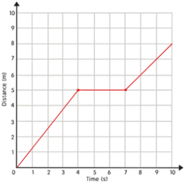
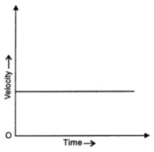

Kinematics
Physics
Kinematics is the study of motion and how objects move. We often describe the motion of objects, points, etc. using words like distance, displacement, speed, velocity, and acceleration.
These quantities can be categorized into two separate categories:
- Scalar
- Vector
Scalar Quantities:
Scalar quantities are quantities which are fully described by a magnititude (a numerical value) alone.
- Distance: Describes the length ofa path between points or locations. | Unit: m
- Speed: Distance traveled by some object during a time interval. | Unit: m/s
Vector Quantities:
Vector quantities are quantities which are fully described by BOTH a magnititude (numerical direction) and a direction (North, East, West, South, North West, etc.)
- Displacement: Describes the straight-line distance from one point to another as well as the direction. | Unit: m [direction]
- Velocity: Displacement travelled by some object during a time interval, with a direction. | Unit: m/s [direction]
- Acceleration: Any change in velocity of an object during a time interval, the change may be an increase or decrease in magnitude of the velocity or a change. | Unit: m/s^2 [direction]
Formulas:
- Speed = Change in Distance / Change in Time
- Velocity = Change in Displacement / Change in Time
- Acceleration = Change in Velocity / Change in Time
Graphs:
Distance/Deplacement vs Time Graph
X and Y Axis
- x = Time
- y = Distance/Deplacement
Slope:
- The slope represents the average speed, more accurately the average velocity, of the object.
Speed/Velocity vs Time Graph
X and Y axis
- x = time
- y = Speed/Velocity
Slope and Area:
- The slope represents the acceleration of the object.
- The area represents the distance, or more accurately the displacement of the object.